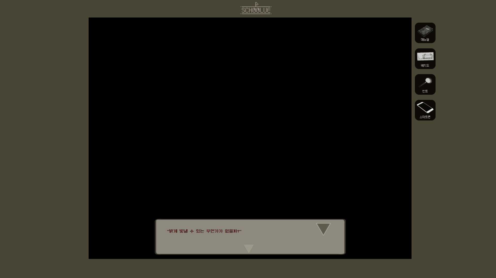
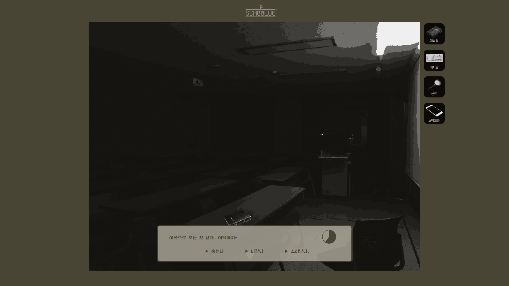

JAE HYUN SEO _ PORTFOLIO WEB
INDEX
1. 메인 설명
2. 시나리오
3. 캐릭터 설정
4. 게임 UI
5. 단서 / 엔딩 시스템

ABOUT SELF
GAME
UX/GUI
JOURNAL

친구의 실종에 대한 사건의 전말을 밝혀라!
형사님에게 부탁을 받은 주인공이 디자인 학과 건물 여기저기를 돌아다니면서 친한 친구의 실종 사건에 대한 실마리를 찾고 주변인들에게 질문하면서 친구의 행방에 대한 단서를 모으는 추리형 호러 게임이다. 일방적인 스토리형 플레이가 아닌, 플레이어 참여형 게임으로서 플레이어가 어떠한 단서를 모으고 선택지를 고르냐에 따라서 모을 수 있는 단서가 달라지고 분기가 갈리게 된다. 과연 실종된 친구 사건의 전말과 그 뒤에 숨겨진 이야기는 무엇일까?

주인공은 평범한 디자인 학과의 3학년 학생이다.
어느날 사라진 자신의 절친한 친구에 대한 의문을 품던 와중, 수사중이던 형사 한 명이 주인공에게 다가와 제안을 한다. 사라진 친구의 주변인들이 무언가를 알고 있는 것 같지만 형사들의 질문으로는 도저히 수사에 진전이 보이질 않는다는 말과 함께 친구를 찾을 수 있는 기회를 잡게 도와줄 의향이 있는가를 묻는 내용이였다. 주인공은 흔쾌히 친구를 위해서라면 하겠다고 이야기 했고, 형사는 평소와 같이 학교에 나가 주변인들과 이야기하고 단서를 찾아보면서 얻게된 모든 것들을 이야기 해달라고 말했다.
주인공은 다른 과의 절친한 친구에게 이 사실을 알린다.
주인공이 다른 과의 절친한 친구에게 이 사실을 알리는 채팅창의 내용으로 게임의 전반적인 스토리를 플레이어에게 전달하게 된다. 다른과의 친구가 '네가 이러한 정보를 모은다는 사실을 다른이가 모르도록 행동하라'는 주의를 주고, 전반적 스토리 설명은 끝난다.

매뉴얼 확인
스토리 설명이 끝난 후 플레이어는 게임 진행에 도움이 되는 매뉴얼을 확인할 수 있다.
게임 도중에도 충분히 막힐 수 있기 때문에 이 매뉴얼에 언제라도 진입이 가능하도록 했다.

맵 이동과 상호작용
플레이어는 디자인과 내부를 샅샅이 돌아다니면서 단서와 단서가 아닌 것들을 구별해야 한다. 상호작용이 가능한 것들은 마우스 커서의 모양이 바뀌면서 플레이어에게 이것이 상호작용이 가능하다는 것을 알려준다.
대화와 상호작용
디자인과 내에 있는 인물들과 상호작용으로 대화가 가능하다. 대화를 하다 보면 선택지가 나뉘게 되는데 이는 플레이어가 얻는 단서에 영향을 미칠 수 있다. 선택에 따라 각기 다른 단서를 얻을 수 있으며 아예 얻지 못할 수 도 있다.

단서 책
플레이어가 어떠한 방법으로든 단서를 얻었다고 판단이 되면 우측 상단에 단서를 얻었다는 팝업창이 뜨게 되는데, 이를 확인하면 해당관련 '단서 책'을 볼 수 있게 된다. 이 안에는 단서에 대한 주인공의 시점에서 생각하는 내용을 확인할 수 있다.
배치도
플레이어가 현재 게임 내 어디에 위치해 있는지를 확인 할 수 있는 배치도이다. 맵에는 플레이어의 쉬운 이해를 위해 주인공이 남긴 낙서들을 확인 할 수 있다.


힌트
힌트는 플레이어가 진전을 못한다고 느낄 때 화면 내 상호작용이 가능한 모든 부분을 잠시 표시하여 도와주는, 말 그대로 '힌트'를 주는 버튼이다. 상호작용이 필요 없는 공간에서는 해당 상황에 도움이 되는 멘트가 나오게 된다.
스마트폰
스마트폰 내의 여러가지 기능들을 사용할 수 있지만, 일부 필요한 공간에서만 작동시킬 수 있는 기능도 있다. 해당 스마트폰의 기능들을 헷갈려 할 수 있는 플레이어들을 위해 매뉴얼에 그 기능들을 설명해둔 페이지가 있다.

시간제한
게임 진행 중에 시간 제한을 두고 선택할 수 있는 선택지가 나타나기도 한다. 당연하게도 후에 얻게 되는 단서에 영향을 미칠 수 있으며 시간을 초과해도 이벤트는 진행된다.
엔딩
단서를 모두 모았다고 판단이 되면 주인공은 형사님을 뵈러 간다. 형사님은 주인공에게 몇 가지 질문을 하게 되는데 이 때 얼마나 단서를 모았는지에 따라 플레이어의 대답은 달라진다. 엔딩은 크게 3가지로 나뉜다. 흔히 말하는 배드엔딩, 노말엔딩, 트루엔딩인데 얼마나 정답에 근접한 대답을 했는지에 따라 확인할 수 있는 엔딩이 달라진다.
작품의도
그래픽 부분에서는 픽셀 그래픽의 레트로 느낌을 주었는데, 사람이 현실적인 그래픽 보다는 더 올드하고 구별이 힘든 그래픽 일수록 느끼게 되는 공포심이 더 크다는 심리를 이용하여 '공포 속의 추리'를 경험하게 해주고자 하였다.
기획적인 부분에서는 전체적인 스토리를 유지하되, 플레이어의 결정에 따라 모을 수 있는 단서와 분기를 다르게 하여 각 플레이어마다 얻을 수 있는 경험을 다르게 하고자 하였다. 그 때문에 플레이어가 주어진 장소와 물건 그리고 질문을 활용하여 모을 수 있는 사건에 대한 단서의 개수가 달라지며 그것들이 불러오는 추리의 결과 또한 달라진다. 하지만 정답이라고 단정 지어 말할 수 있는 루트는 없도록 하였다. 게임 내 모든 단서들을 얻을 수 없게 만들었다는 이야기이다. 어떤 단서를 얻게 되면 다른 단서는 얻을 수 없게 된다.
각각의 플레이어가 자신의 선택에 따른 단서와 추리를 통해 게임을 즐기고 시간을 보냈다면 그것 자체로 게임이 주는 정답이라고 말하고 싶었기 때문이다. 한 마디로 플레이어가 게임의 과정을 즐기는 것 자체에 집중했으면 하는 바램이 있다.
작업 과정
영상물과 비슷하게 모델과 장소를 선정하고 촬영하여 그것을 호러스럽게 편집하는 과정을 통해 지금의 맵과 등장인물이 나오게 되었다. 게임 제작시 모든 편집의 기준을 '호러'와 '의문'에 맞춘 것 같다. 적당히 으스스하면서도 사건의 진실에 대한 플레이어의 궁금증을 유발하도록 하는 것이다.
게임 플레이 속 플레이어에게 공포심을 유발하는 요소들을 넣는 것도 꽤나 오래 수정 단계를 거치고 공을 들인 부분이다.어둠에 대한 공포, 갑작스러움에서 비롯되는 공포 등 모두에게 한번 쯤은 다가왔을 감정적인 공포 요소들 외에 사건의 진실에 대한 공포는 기획자(내 자신)가 겪은 공포를 바탕으로 만들었다. 그 공포는 평소와 같이 길을 걷던 중 찾아온 공포였으며 그때의 경험 또한 언젠가는 게임의 주제로 사용하기 좋겠다는 생각으로 간직해 두었던 공포였다. 더 이상은 게임 스토리에 대한 스포일러가 될 수 있으니 공포 요소 제작 과정은 여기까지만 밝히겠다.
등장인물에 관련해서는 여러가지 성격을 가지고 있는 독특한 캐릭터들을 보여주고 싶었다. 그렇게 생각난 것이 사람의 '7대 죄악'이였다. 교만, 인색, 질투, 분노, 음욕, 탐욕, 나태의 성격을 등장인물들에게 부여하였고 그렇게 각자의 특징을 가진 등장인물들이 등장할 수 있게 되었다.
전체적으로 실사를 편집하여 게임 내 그래픽 요소로 사용한 것이 대부분이기 때문에 많은 이들의 도움을 받게 되었다.(등장인물, 장소 연출 등) 개인적으로 도움을 받은 모든 이들에게 감사를 표하며 이들이 준 도움을 확인 할 수 있는 Thanks to 페이지를 마지막으로 제작하게 되었다.